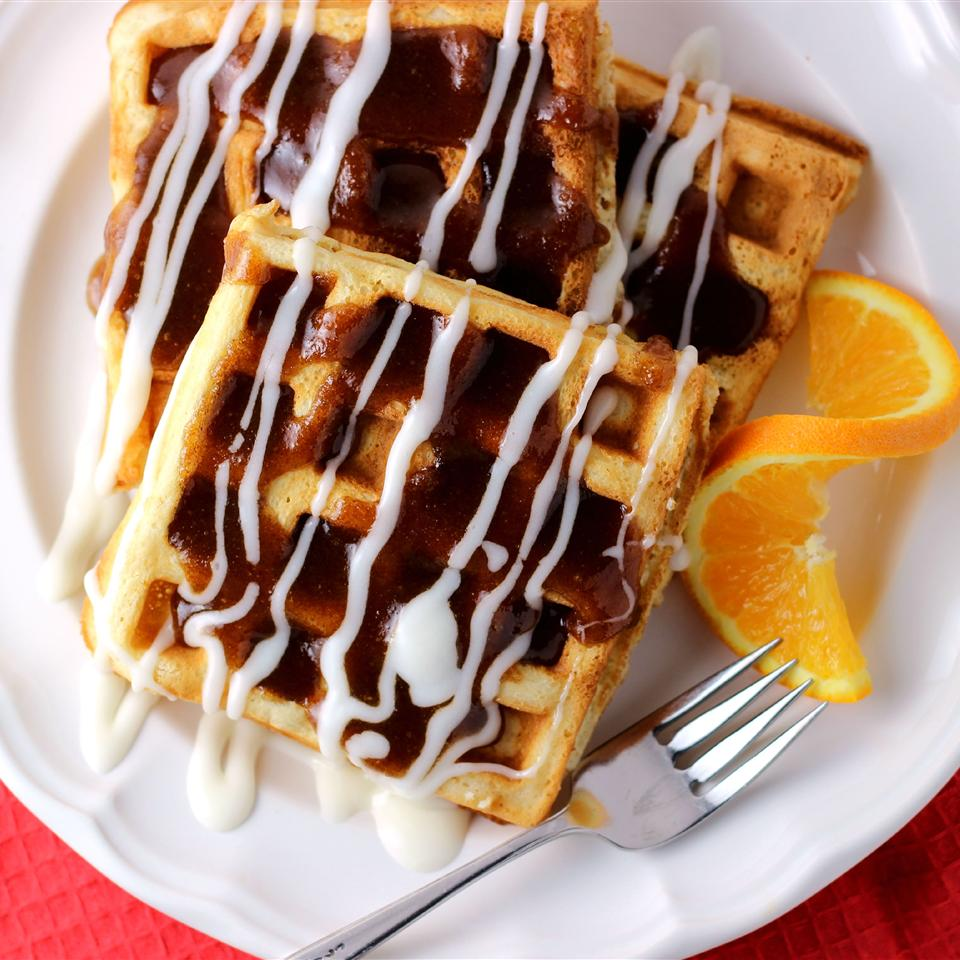

Cinnamon Roll Waffle

A waffle that taste like a cinnamon roll. Serve with bacon along side to
help contrast the sweetness
Ingredients
Waffles:
- 2 cups all-purpose flour
- 2 tablespoons white sugar
- 1 tablespoon and 1 teaspoons baking powder
- 1 teaspoons salt
- 1 ½ cups warm milk
- ¼ cup and 1 tablespoon and 1 teaspoons butter, melted
- 2 eggs, beaten
- 1 teaspoons vanilla extract
Cinnamon Topping:
- ¾ cup brown sugar, packed
- ½ cup butter, melted
- 1 tablespoon ground cinnamon
Cream Cheese Topping:
- 1 ½ cups confectioners' sugar
- 1 (3 ounce) package cream cheese, softened
- ¼ cup butter, softened
- ½ teaspoon vanilla extract
- ⅛ teaspoon salt
Directions
Step 1
- Preheat a waffle iron according to manufacturer's instructions.
Step 2
-
Whisk flour, white sugar, baking powder, and 1 teaspoon salt together in
a large bowl. Beat warm milk, 1/3 cup melted butter, eggs, and 1
teaspoon vanilla extract together in another bowl. Add milk mixture to
flour mixture and stir until batter is lumpy and just-moistened.
Step 3
-
Working in batches, ladle batter into preheated waffle iron and cook
until waffles are golden and crisp, 3 to 5 minutes.
Step 4
-
Stir brown sugar, 1/2 cup melted butter, and cinnamon together in a
bowl. Beat confectioners' sugar, cream cheese, 1/4 cup softened butter,
1/2 teaspoon vanilla extract, and 1/8 teaspoon salt together in another
bowl.
Step 5
-
Place waffles on a plate and drizzle cinnamon mixture and cream cheese
mixture over the top.